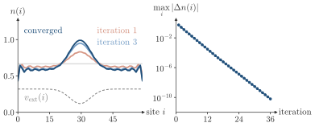
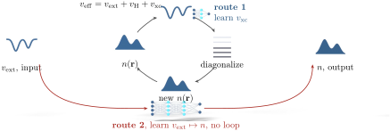

Advanced Quantum Materials 2027 · All lectures · Lecture notes
Session 10. Machine Learning Quantum Materials
10.5 Machine learning in density functional theory
Where can machine learning enter density functional theory (DFT), a much older method of condensed matter, and which entry changes the systems that we can compute? We will now see that DFT in its Kohn-Sham form is solved by a self-consistent loop with one diagonalization in every iteration, and that a network can enter this loop in two places. A learned exchange-correlation potential keeps the diagonalization, while a learned map from the potential to the density removes it, so only the second changes which systems we can compute.
The motivation is the same as in Section 10.3, but now for real materials instead of lattice models. Let us take the Hamiltonian of a material,
\[H = \sum_i \left(-\frac{\hbar^2\nabla_i^2}{2m}\right) + \sum_i v_{\rm ext}(\mathbf{r}_i) + \frac{1}{2}\sum_{i\neq j} \frac{e^2}{|\mathbf{r}_i - \mathbf{r}_j|},\]
with \(v_{\rm ext}\) the potential of the nuclei. For a realistic number of electrons, it is not possible to obtain the many-body ground state \(\psi_0(\mathbf{r}_1,\dots,\mathbf{r}_N)\) directly. DFT avoids this problem by asking a smaller question. It does not ask for the full wavefunction, but for the ground-state electronic density \(n(\mathbf{r}) = N\int |\psi_0|^2\, d^3r_2\cdots d^3r_N\), which has a much lower dimension.
The Hohenberg-Kohn theorem is what makes this approach exact and not only convenient. For a given external potential \(v_{\rm ext}(\mathbf{r})\) with a non-degenerate ground state, the ground-state density \(n(\mathbf{r})\) determines \(v_{\rm ext}(\mathbf{r})\) uniquely, up to an additive constant, and therefore it determines the full Hamiltonian and the full many-body wavefunction. The arrow \(\psi_0 \to n\) is trivial, since it is an integral. The arrow \(n \to \psi_0\) is the nontrivial content of the theorem, and the theorem says that this arrow is guaranteed to exist.
As a result of the Hohenberg-Kohn theorem, the ground-state energy is a functional of the density alone,
\[E[n] = F[n] + \int d^3r\, v_{\rm ext}(\mathbf{r})\, n(\mathbf{r}), \tag{10.7}\]
where only the second term depends on the material. \(F[n]\) is the same for every material, and its exact form is unknown.
Here \(F[n] = T[n] + V_{ee}[n]\) is the sum of the kinetic energy and of the interaction energy of the electrons. It is a universal functional, meaning that it is the same for every system and does not depend on \(v_{\rm ext}\), and nobody knows its exact mathematical form.
The Kohn-Sham construction makes (10.7) useful in practice. We introduce a fictitious system of non-interacting electrons, which is chosen so that it has the same density \(n(\mathbf{r})\) as the real interacting system. These electrons move in an effective potential \(v_{\rm eff}(\mathbf{r})\), which depends on the density itself.
The non-interacting electrons of the Kohn-Sham construction are described by an effective single-particle Hamiltonian
\[H_{\rm KS} = -\frac{\hbar^2\nabla^2}{2m} + v_{\rm eff}(\mathbf{r}), \qquad v_{\rm eff}(\mathbf{r}) = v_{\rm ext}(\mathbf{r}) + \underbrace{e^2\!\int\! d^3r'\, \frac{n(\mathbf{r}')}{|\mathbf{r}-\mathbf{r}'|}}_{\text{Hartree (mean-field) term}} + \underbrace{\frac{\delta E_{\rm xc}[n]}{\delta n(\mathbf{r})}}_{v_{\rm xc}(\mathbf{r})}. \tag{10.8}\]
Since \(v_{\rm eff}\) depends on \(n\), we find \(n\) in a self-consistent loop, and each iteration of the loop diagonalizes \(H_{\rm KS}\). A learned \(v_{\rm xc}\) keeps this step, and a learned map \(v_{\rm ext}\mapsto n\) removes it.
The steps From the energy functional (10.7) to the Kohn-Sham equations (10.8)
The ground-state density is the one that makes \(E[n]\) of (10.7) smallest, so we look for the minimum of \(E\). We first split the unknown \(F[n]\) into three parts. The first is the kinetic energy \(T_s[n]\) of non-interacting electrons that have the density \(n\). The second is the Hartree energy, the classical electrostatic energy of the charge density of the electrons,
\[E_H[n]=\frac{e^2}{2}\int d^3r\,d^3r'\,\frac{n(\mathbf r)\,n(\mathbf r')}{|\mathbf r-\mathbf r'|}.\]
The rest is the exchange-correlation energy, which is defined by
\[E_{\rm xc}[n]=F[n]-T_s[n]-E_H[n]=\big(T[n]-T_s[n]\big)+\big(V_{ee}[n]-E_H[n]\big),\]
meaning that it holds the part of the kinetic energy and of the interaction that the non-interacting electrons and the Hartree term miss. With it the energy reads
\[E[n]=T_s[n]+\int d^3r\,v_{\rm ext}(\mathbf r)\,n(\mathbf r)+E_H[n]+E_{\rm xc}[n].\]
Let us take the simplest case first, two electrons of opposite spin in one orbital \(\phi(\mathbf r)\). Then \(n=2|\phi|^2\) and \(T_s=2\int d^3r\,\phi^*\big(-\hbar^2\nabla^2/2m\big)\phi\). We minimize \(E-2\varepsilon\big(\int|\phi|^2d^3r-1\big)\), where the multiplier \(2\varepsilon\) keeps \(\phi\) normalized, and we take the derivative with respect to \(\phi^*(\mathbf r)\). A change of \(\phi^*\) at \(\mathbf r\) changes the density by \(\delta n(\mathbf r)=2\phi(\mathbf r)\,\delta\phi^*(\mathbf r)\), so every term that depends on \(n\) gives its functional derivative times \(2\phi\),
\[2\left(-\frac{\hbar^2\nabla^2}{2m}\right)\phi+2\left(v_{\rm ext}+\frac{\delta E_H}{\delta n}+\frac{\delta E_{\rm xc}}{\delta n}\right)\phi=2\varepsilon\,\phi.\]
The derivative of \(E_H\) is the Hartree term of (10.8), \(e^2\int d^3r'\,n(\mathbf r')/|\mathbf r-\mathbf r'|\), with no factor \(1/2\), since \(n\) appears twice in \(E_H\). The derivative of \(E_{\rm xc}\) is \(v_{\rm xc}\). We divide by \(2\) and get \(H_{\rm KS}\phi=\varepsilon\phi\), which is (10.8).
With more electrons we take one orbital \(\phi_i\) for each electron, with its spin, so \(n=\sum_i|\phi_i|^2\) and \(T_s=\sum_i\int d^3r\,\phi_i^*\big(-\hbar^2\nabla^2/2m\big)\phi_i\). Each orbital is normalized, and two orbitals of the same spin are orthogonal, which is the Pauli principle, so each of these conditions gets a multiplier. \(E\) does not change under a rotation among the filled orbitals of one spin, so we can take the matrix of these multipliers diagonal, with \(\varepsilon_i\) on the diagonal. The two electrons above are the case of two orbitals of opposite spin with the same \(\phi\). The derivative with respect to \(\phi_i^*\) gives \(H_{\rm KS}\phi_i=\varepsilon_i\phi_i\), with the same \(v_{\rm eff}\) for all the orbitals. We fill the \(N\) orbitals of lowest \(\varepsilon_i\), and since \(v_{\rm eff}\) depends on \(n\), which is built from these orbitals, the equations are solved self-consistently.
On the lattice toy of Schematic 10.5 the Hartree energy is \((U/2)\sum_in(i)^2\), with \(n(i)\) the total density, and its derivative is the term \(U\,n(i)\) of the toy. A small rotation between the filled and the empty orbitals of its converged loop changes \(E\) only at second order. This change is positive, since every empty orbital lies above every filled one and the Hartree energy on the total density adds \((U/2)\sum_i\delta n(i)^2\) for a change \(\delta n(i)\) of the density, a positive term for \(U>0\). So the loop ends at a minimum. A Hubbard term \(U_H\sum_in_\uparrow(i)n_\downarrow(i)\) with \(U_H=2U\) gives the same converged state, but there it is a saddle point. The reason is that a rotation with opposite changes of \(n_\uparrow\) and \(n_\downarrow\) makes a local moment and lowers \(E\).
The first part of \(v_{\rm eff}\) is the external potential of the nuclei. The second part, the Hartree term, is a mean-field decoupling of the interaction, with the same structure as the mean-field theory of Section 1.12. Here it is applied to the Coulomb interaction instead of a Hubbard term on a lattice. The last part, the exchange-correlation potential \(v_{\rm xc}\), is defined so that it contains everything that the mean-field approximation misses, and it is as unknown as \(F[n]\) was. In practice one uses an approximation for \(E_{\rm xc}[n]\), such as LDA, GGA, meta-GGA and further refinements, and solves (10.8) self-consistently. We start from a guess for the density, build \(H_{\rm KS}\) and diagonalize it to obtain the Kohn-Sham orbitals. Then we compute the density again from these orbitals, and we repeat until convergence.

There are two different places where machine learning can enter this loop. We keep them separate, because they solve different problems.
Learning the functional itself. We replace or improve the LDA, GGA or meta-GGA approximation to \(E_{\rm xc}[n]\), or to its functional derivative \(v_{\rm xc}\), with a neural network. The network is trained to reproduce reference calculations with a higher accuracy. This can improve the accuracy, but it does not remove the self-consistency loop. We still have to diagonalize \(H_{\rm KS}\) at every iteration, and this remains the expensive step for large systems, independently of how good \(v_{\rm xc}\) is.
Learning the whole map. A more ambitious use of the Hohenberg-Kohn theorem is to remove the self-consistency loop completely. We train a neural network to map the atomic positions, or equivalently \(v_{\rm ext}(\mathbf{r})\), directly to the ground-state density \(n(\mathbf{r})\), with no diagonalization at all when the network is used. This is the idea behind machine-learned density functionals, which are related to the machine learning interatomic potentials that map atomic positions to energies and forces, an established technique in quantum chemistry and condensed matter. We train the network on conventional Kohn-Sham calculations for small systems that we can solve, and then we apply it to much larger systems, where a direct Kohn-Sham calculation would be too expensive.
The Hohenberg-Kohn reduction is very asymmetric. Going from the many-body ground state to the density is a \(3N\to3\) integral that anyone can do, while going back is guaranteed to be possible but has no formula. This missing formula is where machine learning can enter. Figure 10.4 places both routes on the self-consistency loop, which is the fastest way to see why only the second one changes which systems we can compute.

In atomic units, where \(\hbar=m=e=1\), the Kohn-Sham Hamiltonian is
\[H_{\rm KS}=-\frac{\nabla^2}{2}+v_{\rm ext}+v_H+v_{\rm xc}.\]
Here \(v_{\rm ext}\) is the potential of the nuclei and \(v_H\) the Hartree term. A network gives the exchange-correlation potential \(v_{\rm xc}\) with high accuracy inside the loop. Does this change the largest system that we can compute?
Show the answers
- A. ✗ False
This is false. The Kohn-Sham Hamiltonian \(-\nabla^2/2+v_{\rm ext}+v_H+v_{\rm xc}\) is still a matrix. We need its orbitals to build the density, so the diagonalization stays.
- B. ✓ True
This is true. On a grid of \(M\) points, the diagonalization of \(H_{\rm KS}\) costs about \(M^3\), and a local \(v_{\rm xc}(n)\) costs only about \(M\), one value per point. For \(M=1000\) this is \(10^9\) against \(10^3\), so a better \(v_{\rm xc}\) does not change the limit.
- C. ✗ False
This is false. In LDA the \(v_{\rm xc}\) is a function of the local density, and its cost is small compared with the diagonalization. A local network costs more per grid point than LDA, but its cost still grows only linearly with the number of points, so the limit does not change.
In the Hohenberg-Kohn theorem, which of the two arrows is a simple integral?
Show the answers
- A. ✓ True
This is true. The density is \(n(\mathbf r)=N\int|\psi_0|^2\) over \(N-1\) coordinates, which is an integral. The reverse needs one to solve for \(\psi_0\) in \(3N\) dimensions with no formula.
- B. ✗ False
This is false. For one electron \(\psi_0=\sqrt n\) up to a phase, but already for \(N=2\) no formula exists. For a non-degenerate ground state the theorem says that \(\psi_0\) is unique, and it does not say how to find it.
- C. ✗ False
This is false. An integral loses information, and many functions give the same density. The state \(\psi\) and \(\psi e^{i\phi(\mathbf r_1,\mathbf r_2)}\) have the same \(n\), so one cannot invert it by integration.
The effective potential of the Kohn-Sham electrons has three terms,
\[v_{\rm eff}(\mathbf r)=v_{\rm ext}(\mathbf r)+e^2\!\int\! d^3r'\,\frac{n(\mathbf r')}{|\mathbf r-\mathbf r'|}+\frac{\delta E_{\rm xc}[n]}{\delta n(\mathbf r)}.\]
Here \(n\) is the electron density and \(E_{\rm xc}\) the exchange-correlation energy. Which term is the mean field of the repulsion between the electrons?
Show the answers
- A. ✗ False
This is false. It is the potential of the nuclei, and it does not depend on \(n\). Take a chain of \(60\) sites with the hopping \(-t\) and \(40\) electrons in a well, with the term \(U\,n(i)\) on the total density and \(U=2t\). The well is the same at every iteration of the loop, while the density at its center goes from \(0.67\) to \(0.99\).
- B. ✓ True
This is true. It is the Hartree term, the potential of the average charge density of all the electrons. This is the Hartree part of the mean-field decoupling of the Coulomb interaction, with the same structure as the mean field of a Hubbard term.
- C. ✗ False
This is false. \(v_{\rm xc}\) holds the exchange and the correlation, which the Hartree term misses. Take a chain of \(60\) sites with the hopping \(-t\) and \(40\) electrons in a well. If we keep only the term \(U\,n(i)\) on the total density, with \(U=2t\), it has no \(v_{\rm xc}\) at all. It still has this mean field, which lowers the density at the center of the well from \(1.21\) to \(0.99\).
The Hartree term screens an external potential, and we can see it on the smallest lattice. Take two sites joined by the hopping \(-t\), with \(t>0\), and two electrons of opposite spin in the lowest orbital. The external potential has \(v_{\rm ext}(1)-v_{\rm ext}(2)=\Delta\), and the Kohn-Sham potential is \(v_{\rm eff}(i)=v_{\rm ext}(i)+U\,n(i)\), with \(n(i)\) the total density on site \(i\). Find \(n(1)-n(2)\) to first order in \(\Delta\), without \(U\) and with it.
Solution
We write \(\delta=v_{\rm eff}(1)-v_{\rm eff}(2)\) and take \(\sigma_z=+1\) on site \(1\). Up to a constant, the Kohn-Sham Hamiltonian is
\[H_{\rm KS}=-t\,\sigma_x+\frac{\delta}{2}\,\sigma_z,\]
which is a spin one half in a field. Its lowest orbital has \(\langle\sigma_z\rangle=-(\delta/2)/\sqrt{t^2+\delta^2/4}\), and both electrons are in it, so
\[n(1)-n(2)=2\langle\sigma_z\rangle\approx-\frac{\delta}{t}\qquad\text{for } |\delta|\ll t.\]
Without \(U\) we have \(\delta=\Delta\) and \(n(1)-n(2)=-\Delta/t\), meaning that the electrons move to the site of lower potential. With \(U\) the difference of the densities enters the potential, \(\delta=\Delta+U\,[n(1)-n(2)]\), and the self-consistent solution of \(n(1)-n(2)=-\delta/t\) is
\[n(1)-n(2)=-\frac{\Delta}{t+U}.\]
For \(U=2t\) this is a third of the value without \(U\). The electrons that move to the lower site raise its energy, so the difference of potential that they feel is reduced from \(\Delta\) to \(\Delta\,t/(t+U)\). This is the screening that lowers the density at the center of the well of Schematic 10.5 from \(1.21\) to \(0.99\). On the chain the response is not that of two sites. There the excess density at the center, above the uniform \(2/3\), falls to about \(0.6\) of its value without \(U\), and not to a third.
The same equation tells why the loop has to mix the densities at \(U=2t\). On the two sites, a loop that takes the new density as it is multiplies the error by \(-U/t=-2\) at each step, so it does not converge. Mixing \(30\%\) of the new density into the old one gives the factor \(0.7-0.3\,U/t=0.1\). The loop of the chain of \(60\) sites does not converge without mixing either, which is why it mixes the densities. With mixing its error is multiplied by about one half at each iteration, and not by \(0.1\), since its response is not that of two sites.
DFT calculations were never part of the numerical tools of this course, since pyqula is a tight-binding and mean-field library and not a DFT code. So this part has no notebook counterpart, and the derivation above is complete, given the Hohenberg-Kohn theorem.